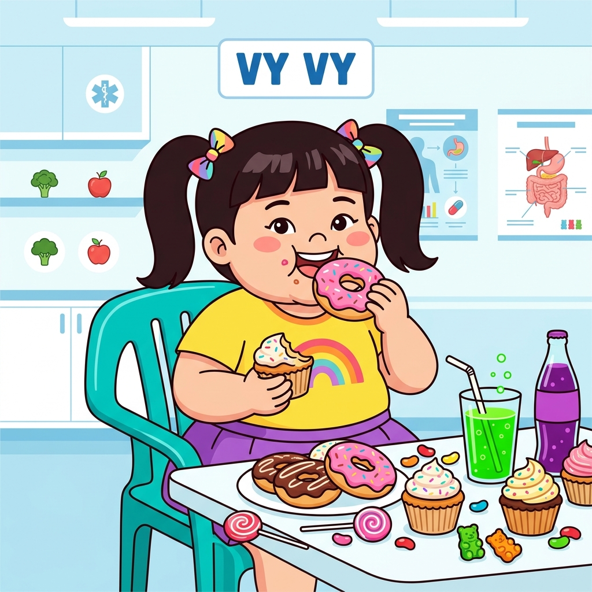

Ghép hồ sơ bác sĩ: Click chọn Bệnh nhân ở cột trái, rồi click vào Thói quen tương ứng ở cột phải để ghép nối!

BỆNH NHÂN: LINH ANH
🥗 Ăn rất ít thịt cá, hầu như không uống sữa hoặc sữa chua. Thường xuyên ăn snack bim bim, đồ ăn vặt nhiều dầu mỡ.

BỆNH NHÂN: KEM
😴 Thường xuyên thức muộn đến 12h đêm để xem máy tính chơi game. Sáng hôm sau dậy rất muộn, cơ thể mệt mỏi uể oải.

BỆNH NHÂN: NAM ANH
🏃 Hầu như không tham gia thể thao. Dành toàn bộ thời gian rảnh nằm chơi điện thoại. Ít đi lại, lười làm việc nhẹ.
Lười Vận Động
Chưa nốiDinh Dưỡng Sai Lệch
Chưa nốiThiếu Giấc Ngủ Ngon
Chưa nốiĂn nhiều snack, uống nước ngọt thay thế sữa, lười ăn các loại đạm cá thịt.
THIẾU ĐẠM & CANXI
Cơ thể thiếu hụt các axit amin cốt lõi từ đạm để hình thành đĩa sụn, đồng thời thiếu canxi lắng đọng làm xương chậm kéo dài và dễ giòn.
Thường xuyên bật laptop xem phim, chơi game muộn đến 12h đêm mới đi ngủ.
RỐI LOẠN GIẤC NGỦ LÂM SÀNG
Thiếu hụt Hormone tăng trưởng (GH). Sóng ánh sáng xanh màn hình ức chế hormone melatonin gây ngủ, cản trở đạt trạng thái ngủ sâu.
Hầu như nằm xem điện thoại, lười vận động di chuyển chân tay hàng ngày.
SUY GIẢM THỂ CHẤT THỤ ĐỘNG
Đĩa sụn tiếp hợp ở các đầu khớp không được kích thích giãn nén thông qua lực nén cơ học sinh ra khi chạy nhảy, làm khớp xương kém linh hoạt.

Ăn nhiều thực phẩm ngọt, thức ăn nhanh nhiều mỡ và lười vận động.
BÉO PHÌ & CỐT HÓA SỚM
Trọng lượng cơ thể quá tải nén ép chặt lên đĩa sụn, đồng thời thừa đường tinh luyện kích thích xương kết tinh đóng khớp sụn tăng trưởng sớm.
CẤP CHỨNG NHẬN Y KHOA
Điền tên học sinh dưới đây để cấp chứng chỉ danh giá của Hội đồng Đào tạo Lâm sàng Bệnh viện Nova Hospital.
Chuyên đề: PHÁT TRIỂN CHIỀU CAO TỐI ƯU
Cam kết duy trì 3 yếu tố cốt lõi: Dinh dưỡng đủ chất - Ngủ sớm trước 22h - Vận động hàng ngày.